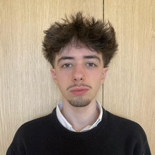
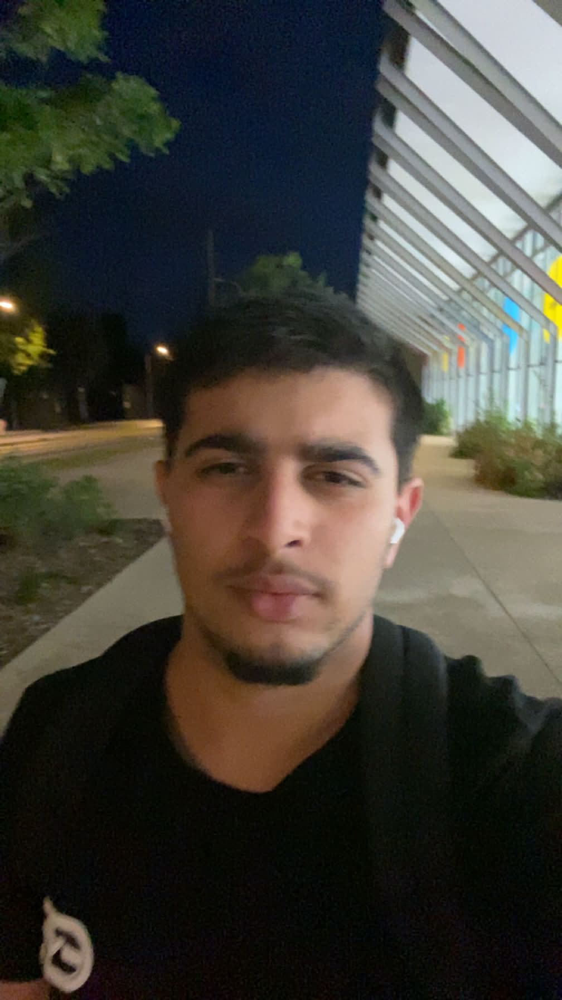

Frédéric Meunier
Diplômé de l'EBS (1989) et de l'EMBA HEC (2008). Administrateur puis trésorier de l'EFREI, il en prend la présidence en 2009, puis la direction générale en 2011.
Fondée en 1936, l'EFREI n'a eu de cesse d'évoluer au fil des avancées technologiques. Elle est devenue l'école référente dans le numérique et compte désormais plus de 17 200 alumni. École composante du grand établissement Panthéon-Assas Université, ses diplômes sont reconnus en France et à l'international.
Intégrer l'EFREI, c'est rejoindre une école engagée dans la révolution numérique, qui vise l'excellence et qui met au premier plan l'expérience étudiante.Frédéric Meunier Directeur général de l'EFREI
Rejoindre l'EFREI, c'est faire le choix d'une grande école indépendante, associative et labellisée EESPIG, appréciée pour sa dimension humaine, son expérience étudiante et sa pédagogie par projet.
Le diplôme d'ingénieur de l'EFREI est habilité par la Commission des Titres d'Ingénieur (CTI), garantissant un haut niveau académique et une reconnaissance nationale et internationale. Les programmes Experts du numérique permettent l'obtention d'une certification RNCP reconnue par l'État.
Depuis 2022, l'EFREI est établissement composante de l'Université Paris-Panthéon-Assas, aux côtés de l'ISIT, de l'IRSEM, du CFJ et de l'école W. Ce rapprochement réunit leurs expertises autour de thématiques clés : droit, éthique, digital et économie.
Une école qui a su se réinventer à chaque révolution technologique, depuis la radioélectricité jusqu'à l'intelligence artificielle.
L'école EFR est créée à Paris par Ernest Lavigne pour répondre aux besoins en radioélectricité. Elle forme des spécialistes des ondes radiophoniques pour la marine marchande.
L'école est habilitée par la Commission des Titres d'Ingénieur à délivrer le titre d'ingénieur. Création de la classe préparatoire intégrée.
L'EFRE devient l'École Française de Radioélectricité, d'Électronique et d'Informatique. Elle s'adapte à la révolution numérique en intégrant l'informatique aux côtés de la radio et de l'électronique.
Pour répondre à la croissance, l'école inaugure son campus à Villejuif, augmentant ses effectifs et concentrant ses efforts sur la formation d'ingénieurs.
Le campus de Villejuif accueille un incubateur dédié aux projets innovants des étudiants et startups, au service de l'entrepreneuriat technologique.
La recherche devient un pilier de l'école, nourrissant directement les formations par des projets et des cours innovants.
L'EFREI est reconnue Établissement d'Enseignement Supérieur Privé d'Intérêt Général, garantissant qualité et engagement.
L'école étend son rayonnement avec un nouveau site à Bordeaux, renforçant sa présence en région aquitaine.
L'EFREI rejoint le Campus Cyber, pôle national de cybersécurité, renforçant son leadership dans la formation numérique avancée.
L'EFREI devient établissement composante de Paris-Panthéon-Assas, aux côtés de l'ISIT, de l'IRSEM, du CFJ et de l'école W.
En janvier 2026, l'école ouvre son nouveau campus à Villejuif. 6 étages, 4 700 m², 29 salles de cours, espaces de coworking, 1 salle de sport, 1 salle de danse, 1 cafétéria et 1 terrasse végétalisée. Il accueille aussi l'EFREI Research Lab.
Diplômé de l'EBS (1989) et de l'EMBA HEC (2008). Administrateur puis trésorier de l'EFREI, il en prend la présidence en 2009, puis la direction générale en 2011.
Contribue à la définition de la stratégie. Anciennement Secrétaire Générale chez Gares Connexions (Groupe SNCF), elle a aussi travaillé au sein du Groupe Solocal et de Disney Télévision Paris. Diplômée de l'INSEEC Paris.
Diplômé d'un MBA à l'Inseec Grande École en 2009. Carrière dans les médias et la communication chez Publicis, puis Groupe Omnes. Rejoint l'EFREI en 2019 où il dirige le développement et les relations extérieures.
Ingénieur de l'École Polytechnique et de Télécom Paris, master en astrophysique de Sorbonne Université, docteur en mathématiques appliquées de Paris-Dauphine. Rejoint l'EFREI en 2021 et dirige l'EFREI Research Lab.
Ingénieur diplômé en génie informatique. Carrière chez Microsoft, puis CESI, Ionis STM, ESGI et IIM. Rejoint l'EFREI en 2021, Directeur de la formation depuis la rentrée 2023.
Enseignante-chercheuse en informatique. Diplôme d'ingénieur d'État en informatique de l'École nationale Supérieure d'Informatique (ESI), Magistère, doctorat en 2021. Rejoint l'EFREI en 2022.
L'EFREI possède un réseau d'ingénieurs et d'experts du numérique en activité dans plus de 1 000 entreprises en France et à l'international.
Co-fondateur avec Paul Magneron de la société R2E, qui a commercialisé le tout premier micro-ordinateur au monde. En 1973, avec l'ingénieur François Gernelle, il crée le Micral-N.
1959Pionnier des communications IP. A fondé Symphony Communication Services, plateforme de messagerie sécurisée pour les entreprises. Devenue licorne en 2017, valorisée à plus d'un milliard de dollars.
1992Cofondateur d'OpenClassrooms, plateforme de formation en ligne devenue référence mondiale dans l'éducation numérique. Rédacteur, producteur de cours et stratège.
2008Entrepreneur français. Après avoir développé des innovations majeures chez Free, il crée Télé-Loisirs, puis fonde Manager One, banque en ligne à succès mondial. Figure majeure de la French Tech.
2009Spécialisée dans la conduite du changement et le développement de business IT. De Microsoft à Apple, en passant par Compaq, Hewlett-Packard et Cisco Systems, son parcours est marqué par l'audace.
1988Enseignante-chercheuse à l'EFREI, première femme en France à décrocher l'accréditation CEI (Certified EC-Council Instructor). Habilitée à coacher les étudiants au CEH (Certified Ethical Hacker).
2020Près de 50 enseignants-chercheurs et de nombreux professionnels accompagnent les étudiants. Une approche qui combine rigueur technique et maîtrise des soft skills.
Cours fondamentaux dispensés par des enseignants-chercheurs et des intervenants en activité.
Travaux dirigés, projets de groupe, hackathons et défis techniques tout au long de l'année.
Stages obligatoires, alternance, semestre à l'international parmi 106 universités partenaires.
Incubateur EFREI Entrepreneurs, projets innovants, accompagnement startup dès le cycle ingénieur.
Ce site vitrine a été réalisé dans le cadre du module TI402 — Programmation Web, en HTML5, CSS3 et JavaScript natif, sans framework. Voici l'équipe étudiante et la répartition du travail.

Responsable de la structure HTML5 sémantique du site, de l'arborescence des pages et de toute la couche interactive en JavaScript. A coordonné l'intégration finale et la gestion du dépôt Git.

A conçu la charte graphique (palette bleu EFREI, typographie éditoriale), l'a traduite en CSS3 responsive, et a rédigé l'ensemble des contenus du site. Pilote de l'accessibilité et des tests cross-browser.
École indépendante, associative et labellisée EESPIG, l'EFREI vous attend sur ses campus de Paris & Bordeaux.